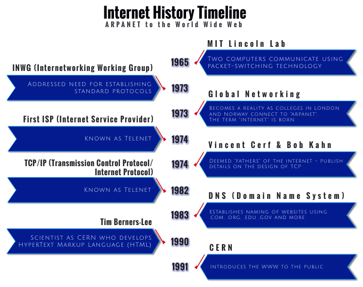

The internet is a global connection of computers and networks that are connected for the purpose of sharing information. There are different types of hardware and software that are used as part of the infrastructure related to accessing the internet. The internet is also a type of network called a Wide Area Network or WAN.
A network is when there are two or more computer devices connected for the purpose of sharing resources and information. Two common networks are a Local Area Network and a Wide Area Network. Networks can be as small as connecting just two devices or as large as connecting billions of devices. LANs are typically a type of network that can be found in a building, while a WAN can be several buildings or more.
The precursor to the Internet, known as the ARPANET, began in 1969 as part of the U.S. Defense Department. In fact, ARPANET stands for Advanced Research Project Agency Network. The researchers that were involved in the project were also responsible for many of the protocols that we use when communicating the many different ways using the internet. See the timeline below for a quick look at the development of the internet and other technologies:
